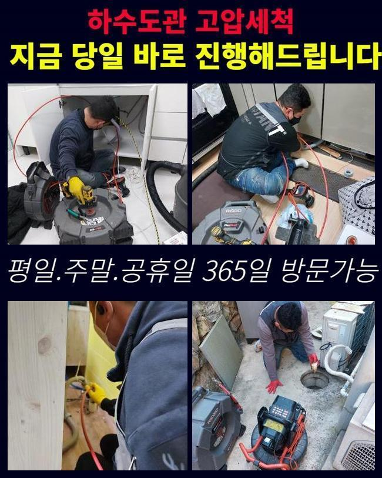
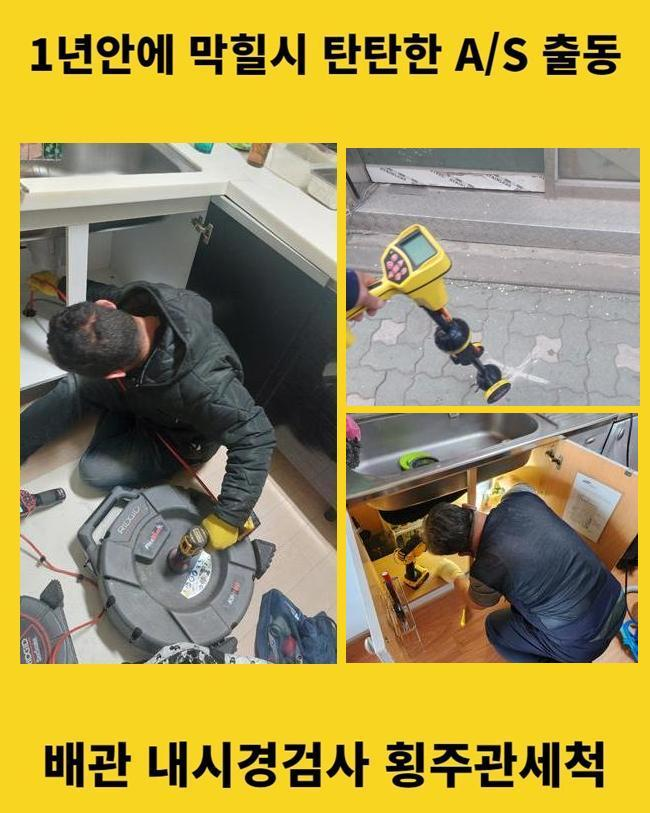
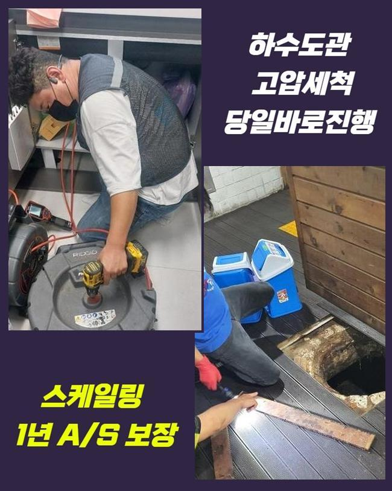
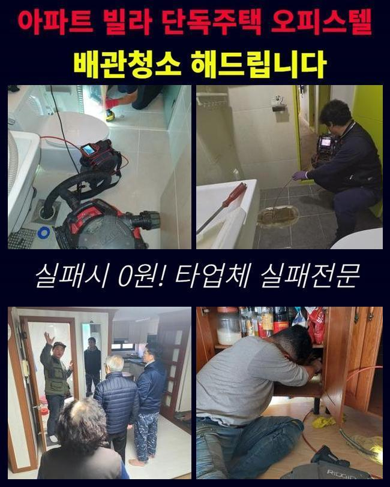
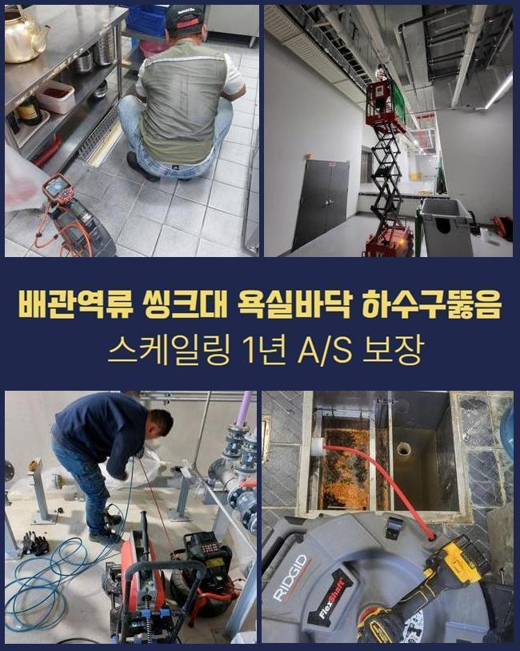
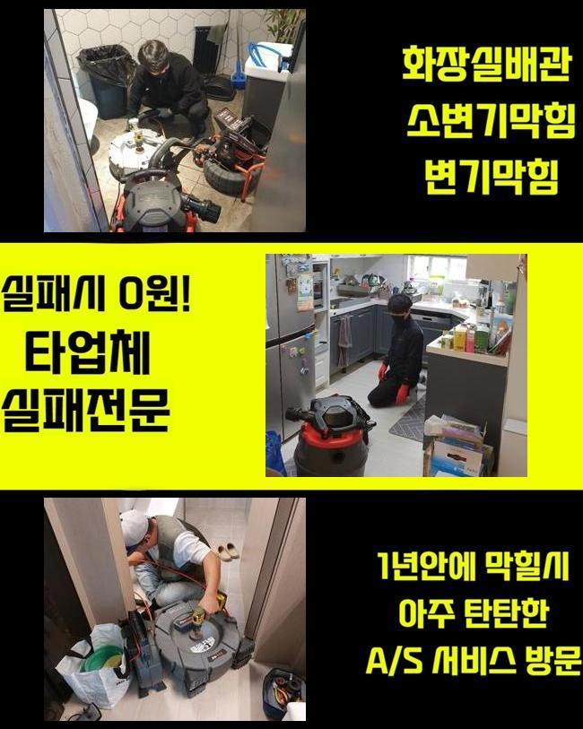

🏠 이천 사음동오수관막힘 율면 하수구뚫는곳 해결방법
용인 싱크대막힘 전문 시공 후기

📋 작업 개요
- 위치: 용인
- 서비스 유형: 싱크대막힘, 하수구막힘, 배관막힘, 맨홀막힘, 뚫는업체, 배관청소, 고압세척
- 작업 일시: 2025. 2. 4. 10:27
- 업체명: 하수구수사대 (010-5615-2118)
🔍 문제 상황
이천 사음동오수관막힘 율면 하수구뚫는곳 해결방법
주방에서 주방쪽이 막힌다면 사용 자체에 여러 피해를 겪는데요
식당에서 위와같은 증상이 생기면 운영에도 악영향력들을 미쳐요
그러므로 전문성을 갖춘 상태에서 신속한 대응이 필요하죠
요식업소에서 주방라인에서 배수정체가 나타났죠
근방의 식당에까지 배수불가의 증상이 목격되었어요
이런 증상은 메인관로에 이상이 생겼을 확률들이 있는데요
그리하여 공유관로를 이용하는 맨홀쪽의 진단도 동반되야하는 상황이였죠
도착한 후 먼저 주방 씽크대부분이 막혀버린것을 관찰할 수 있었습니다

🔎 원인 분석
💡 전문가 진단: 정밀 진단 장비를 사용하여 슬러지의 고착 여부를 판명하고 타격/세척 작업을 실시했습니다.
그로 인하여 배수들이 불가했던 모습이였고 올바른 작업이 실시되어야했어요
배수관의 오류들은 수많은 요소로 나타나는데 수많은 현장 경험으로 미루어볼때 대다수의 이유는 구조에서 비롯된 문제와 더불어 잔해들이 쌓여서그런건데요
통수관련 트러블은 위생 관련한 사항에도 대대적인 악영향들을 끼쳐서 그에 맞는 방식을 사용해보았어요
내시경기기를 관로안으로 집어넣고 구석까지 살폈더니 전체적으로 잔해물들이 축적된 걸 관찰했어요
내시경도구는 협소한 배수관을 확인하는 장비들로 투입되는 선을 하수관으로 투입해 송출화면으로 안을 보여주는 기기입니다
살펴보았더니 오수들이 빠져나가지를 못하여 고여버린 상태였는데요
관로가 오래된 경우라던가 구조에서 비롯된 문제로 보이지는 않았고 배수관으로 흐르던 식자재의 잔해가 쌓이는 바람에 통수자체를 방해하는게 이유로 보였어요
바닥배관과 외부라인이 연결된 구조라 싱크대부분에서 나타난 이물질이 외부라인에 영향력들을 미친 상태였습니다
까닭들을 체크해보고 서둘러 하수관을 뚫어보고자 청소를 이행했는데요
해당 시점에 써준것은 플렉스 샤프트라는 장비들로 샤프트의 경우 배수관에서 원 운동을 하며 고착물들을 청소해주는 중점적인 장비이죠

🔧 작업 과정
노커체인을 사용한다면 조리공간이 막혀버렸을때 오염물을 제거하고 덧붙여 내식성에 대해서도 손상케하는 일도 없고 스무스하게 작업해줄 수 있어요
샤프트기기를 준비시켜 고착화를 보이는 곳에 접근한 후 체인들로 오염물질들을 타격했는데요
폐기물들이 샤프트도구에 엉킨채로 배출되었습니다
뒤섞인 잔해를 관찰하니 생각한대로 개수대에서 침투된 음식쓰레기와 기름성분이 대부분이였어요
여러 사례를 보건대 음식쓰레기가 많은 양이였는데 손질을 하실때 제거된 뿌리의 잔여물들로 싱크볼에서 흐르며 물이 안빠지게 만드는 까닭이 된것입니다
뿌리부분으로 말씀드리면 원활히 흘러가지 못하여 배수관에서 한 자리 차지해 막힘문제를 양산시킵니다
음식물쓰레기등과 기름덩어리들도 많은 양들이 청소됐는데 배수구안으로서 이용되는 기름들이 관로로 흘러나가며 구간마다 굳어지게된것입니다
기름들은 하수도에서 조금씩 고착되며 벽측에 흡착하여 다른 음식물들과 뒤섞여 빠른속도로 정체를 자아냅니다
오일들은 지속해서 굳게되어 간소한 방법으로 해결할 수 없는 경우들이 다수입니다
샤프트의 사슬들을 운용하여 잔해들을 제거하고 석션기기를 투입하여 분쇄된 부유물을 흡입하여 놓친 부분없이 마무리해주었어요
딱딱해진 기름성분과 부유하던 오염물들도 정리해주고 작업대상 관로를 내시경기기로 점검하고 오염도를 보게되었어요
막히는 현상은 잡혔고 밖의 하수도의 솟구치는 영향까지 깔끔히 제거했죠
작업 이후 고객분에게 씽크대 관로의 주의사항과 관련된 도움되는 사항들까지 안내했는데요
일단 씽크대에 잔해들을 걸러주지않고 배출을 금하는게 중요하게 작용한다고 안내했는데요
더군다나 딱딱한 식재료나 기름성분은 하수구 막힘의 원인들이 되므로 평상 시 이물질들을 씽크대로 배출하기 이전에 별도 처리하시는게 좋다고 말씀드렸죠
기름들은 용해되지가 않고 내측에서 고착되기에 사용한 기름성분은 휴지들로 걷어내고 세척해주시는것이 안전하답니다


✅ 작업 완료
갑작스러운 문제들을 피하려면 지속적으로 배수관을 세정해주고 필요하다면 관련 용품들을 쓰는게 이점으로 작용한다는것도 일러드렸어요
의뢰자께서는의뢰인은 저희의 설명을 듣고서 신경써서 관리부분을 꼼꼼하게 하실것을 말하셨는데요
하수구 결함현상은 방임한다면 처음과다르게 심해지므로 조기에 조속하게 대처하는게 중요하겠습니다
마무리까지 마쳐 의뢰인의 고민들을 바로 잡아 한숨 돌릴 수 있었고 갑작스러운 배수정체를 예방하고자 적재적소의 점검실시가 꼭 필요하단것을 최종적으로 전해드립니다



⚠️ 주방 싱크대 배관 막힘 예방 수칙
- ✅ 기름기가 묻은 식기나 프라이팬은 설거지 전 키친타올로 반드시 기름때를 닦아내세요.
- ✅ 주기적으로 싱크대 개수대에 뜨거운 물을 가득 받아 한 번에 내려 배관 내부 기름을 씻어내세요.
- ✅ 배수구 거름망을 미세한 필터로 사용하시고 음식물 찌꺼기가 틈으로 새어 들지 않게 관리하세요.
- ✅ 베이킹소다와 식초를 뜨거운 물과 함께 일주일에 한 번씩 부어주면 배관 살균과 막힘 예방에 좋습니다.
💡 핵심 정리
- 확실한 장비 작업(내시경 점검 및 샤프트 스케일링)으로 원인을 뿌리 뽑습니다.
- 작업 후 1년 이내에 동일한 부위 재발 시 100% 무상 A/S 서비스를 보장합니다.
- 서울 · 경기 · 인천 전 지역에 24시간 언제든 긴급 출동할 수 있도록 항시 대기 중입니다.
❓ 자주 묻는 질문 (FAQ)
🚨 용인 싱크대막힘 문제로 고민이신가요?
정확한 원인 진단과 확실한 시공으로 재발 없는 해결을 약속드립니다.
24시간 긴급 출동 | 서울 · 경기 · 인천 전지역 | 1년 내 재발 시 무상 A/S